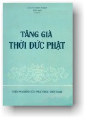

BuddhaSasana
Home Page
This document is written in Vietnamese, with Unicode
Times font
|  |
Viện Nghiên cứu Phật học Việt Nam Tăng-già thời Đức PhậtThích Chơn ThiệnSài Gòn, 1991 |
-ooOoo- ''Tăng-già thời đức Phật'' được Thượng tọa Thích Chơn Thiện biên soạn, trước hết nhằm đáp ứng yêu cầu nội dung đào tạo Tăng Ni theo chương trình của Ban Giáo dục Tăng Ni Trung ương Giáo hội Phật giáo Việt Nam đề ra. Kế đến, tác phẩm cũng nhằm giới thiệu một số tài liệu thông chứng và nhận định về Thánh hội của đức Bổn Sư từ lúc Ngài khởi sự chuyển Pháp luân cho đến lúc Ngài nhập Niết-bàn. Do đó, chúng tôi nghĩ, đây là tác phẩm cần yếu cho các giảng sư, các Tăng Ni sinh ở các Phật học viện, trường Cơ bản Phật học, trường Cao cấp Phật giáo Việt Nam cũng như các học giả, hành giả hằng lưu tâm đến tổ chức và sinh hoạt thánh thiện của một Giáo đoàn đã có mặt từ hơn 25 thế kỷ nay, vốn là một thành phần của Tam Bảo mà người Phật tử thệ nguyện trọn đời quy ngưỡng. Tác phẩm được trình bày theo hình thức và nội dung mang tính giáo khoa, sư phạm và cơ bản: các sự kiện lịch sử, giáo lý được trình bày có hệ thống, dựa theo kinh điển nguyên thủy và theo các nghiên cứu khoa học về lịch sử, khảo cổ, văn học, nghệ thuật .. trong khuôn khổ hạn chế về độ dày của cuốn sách. Tuy vậy, qua nhiều nhận định và lập luận theo tinh thần Phật giáo phát triển của soạn giả, có thể người đọc cũng được hé lộ để tiến đến một số suy nghĩ sâu sắc, mớI mẻ cho chính mình về đức Phật, Giáo pháp và Tăng đoàn của Ngài. Nhiều năm qua, Thượng tọa Thích Chơn Thiện đã đóng góp nhiều công đức vào công tác Phật sự của Giáo hội Phật giáo Việt Nam qua việc thuyết giảng cho đông đảo quần chúng Phật tử, qua việc tham gia tổ chức, soạn thảo chương trình và giảng dạy tại trường Cao cấp Phật học Việt nam, qua các công tác nghiên cứu, tổ chức và thực hiện thuộc Viện Nghiên cứu Phật học Việt Nam, qua việc dịch thuật và biên soạn nhiều tác phẩm Phật học có giá trị. ''Tăng-già thời đức Phật'' là một trong những thành quả của công tác Phật sự ấy. Chúng tôi trân trọng giới thiệu cùng chư độc giả. Mùa Vu lan, PL. 2535 (1991) -ooOoo- Ðầu trang | 01 | 02 | 03 | 04 | 05 | 06 | 07 | 08 | 09 | 10 | Mục lục |
Chân thành cám ơn anh HDC đã giúp tổ chức đánh máy vi tính (Bình Anson, tháng 07-2001)
updated: 07-07-2001